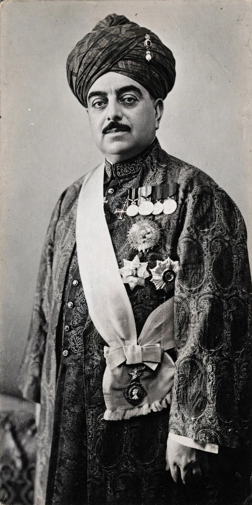

Aga Khan III
From Wikipedia, the free encyclopedia
| Aga Khan III Sultan Mohammed Shah | |
|---|---|
| Born | 2 November 1877, Karachi |
| Died | 11 July 1957, Versoix, Switzerland |
| Title | 48th Imam of the Nizari Ismailis |
| Reign | 1885–1957 |
| Successor | Aga Khan IV |
Aga Khan III, born Sultan Mohammed Shah (2 November 1877 – 11 July 1957), was the 48th Imam of the Nizari Ismaili Muslims, leading the community for 72 years.
Life and leadership
Succeeding his father Aga Khan II at the age of eight, he became one of the most influential Muslim leaders of the early 20th century. He was a prominent figure in British Indian public life: a founding member of the All-India Muslim League, president of the League of Nations Assembly in 1937, and India's representative at the Round Table Conferences.

Sultan Mohammed Shah, Aga Khan IIIReforms and philanthropy
He championed modern education for Ismailis, especially the schooling of girls, and issued firmans (guidance) urging his followers to embrace modernity, science and economic self-reliance. His diamond jubilee in 1946 was celebrated by his community weighing him in diamonds, the proceeds funding development projects — an early model of the community development institutions that became the Aga Khan Development Network.
Racehorses
A celebrated owner and breeder of thoroughbred racehorses, his horses won the Epsom Derby five times.
Succession
He died in Versoix, Switzerland, in 1957, and was succeeded by his grandson, Prince Karim Aga Khan, who became Aga Khan IV.